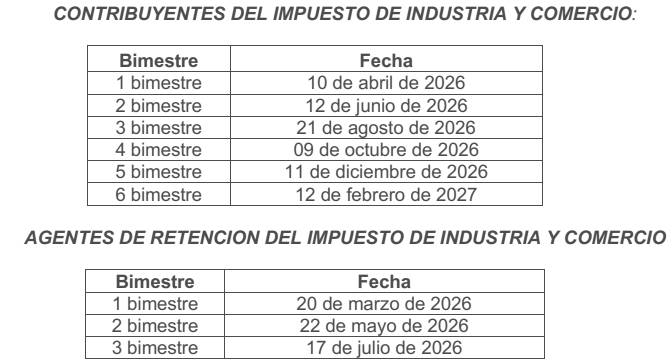
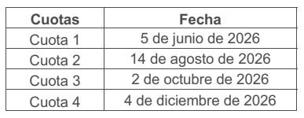

Las tablas de fechas del ICA bimestral y de las cuotas del SPAC están como imagen en la página del Régimen Legal; se leyeron de la imagen. Las demás fechas salen del texto.


| Concepto | Fechas | Artículo |
|---|---|---|
| predial_pronto_pago_10 | 2026-04-17 | 6 |
| predial_facturas_expedidas_a_mas_tardar | 2026-04-30 | 4 |
| predial_sin_descuento | 2026-07-10 | 3 |
| spac_declaracion_inicial | 2026-05-08 | 5 |
| spac_cuotas | 2026-06-05 2026-08-14 2026-10-02 2026-12-04 | 5 |
| ica_bimestral_comun_mayor_391_uvt | 2026-04-10 2026-06-12 2026-08-21 2026-10-09 2026-12-11 2027-02-12 | 1 |
| ica_anual_comun_hasta_391_uvt_y_preferencial | 2027-02-26 | 1 |
A la izquierda están las imágenes de la página: la tabla del art. 1 sigue en la segunda imagen (bimestres 4 a 6 de la retención). A la derecha, las tablas que se insertaron en la base de conocimiento, para compararlas con las imágenes.
Contribuyentes del impuesto de industria y comercio
| Bimestre | Fecha |
|---|---|
| 1 bimestre | 10 de abril de 2026 |
| 2 bimestre | 12 de junio de 2026 |
| 3 bimestre | 21 de agosto de 2026 |
| 4 bimestre | 09 de octubre de 2026 |
| 5 bimestre | 11 de diciembre de 2026 |
| 6 bimestre | 12 de febrero de 2027 |
Agentes de retención del impuesto de industria y comercio
| Bimestre | Fecha |
|---|---|
| 1 bimestre | 20 de marzo de 2026 |
| 2 bimestre | 22 de mayo de 2026 |
| 3 bimestre | 17 de julio de 2026 |
| 4 bimestre | 18 de septiembre de 2026 |
| 5 bimestre | 20 de noviembre de 2026 |
| 6 bimestre | 15 de enero de 2027 |
| Cuotas | Fecha |
|---|---|
| Cuota 1 | 5 de junio de 2026 |
| Cuota 2 | 14 de agosto de 2026 |
| Cuota 3 | 2 de octubre de 2026 |
| Cuota 4 | 4 de diciembre de 2026 |
Las fechas que no están en imagen salen de estos textos (arts. 1, 3, 4, 5 y 6 de la Resolución SDH-000195 de 2025), tal como están en la base de conocimiento.
Artículo 1°. Plazos para declarar y pagar. Los contribuyentes pertenecientes al régimen común del impuesto de industria y comercio, cuyo impuesto a cargo (FU), correspondiente a la sumatoria de todo el año gravable 2025, exceda de 391 UVT, es decir, de DIECINUEVE MILLONES CUATROCIENTOS SETENTA Y UN MIL CUATROCIENTOS NUEVE PESOS ($19.471.409) y los agentes retenedores de dicho tributo, deberán declarar y pagar las obligaciones tributarias correspondientes a cada bimestre del año gravable 2026, en las siguientes fechas:
Los contribuyentes del impuesto de industria y comercio pertenecientes al régimen común, cuyo impuesto a cargo (FU) correspondiente al año gravable 2025 no exceda de 391 UVT, es decir, de DIECINUEVE MILLONES CUATROCIENTOS SETENTA Y UN MIL CUATROCIENTOS NUEVE PESOS ($19.471.409), estarán obligados a presentar por los medios virtuales adoptados por la Secretaría Distrital de Hacienda, una única declaración anual por dicho año gravable, a más tardar el 26 de febrero de 2027.
Los contribuyentes del impuesto de industria y comercio pertenecientes al régimen preferencial estarán obligados a presentar por los medios virtuales adoptados por la Secretaría Distrital de Hacienda, una única declaración anual por el año gravable 2026, a más tardar el 26 de febrero de 2027.
> Tabla en imagen en la fuente, transcrita. Las fechas de este artículo están en imágenes de la página y no salen en el texto; se transcribieron y se verificaron contra la imagen.
Contribuyentes del impuesto de industria y comercio
| Bimestre | Fecha |
|---|---|
| 1 bimestre | 10 de abril de 2026 |
| 2 bimestre | 12 de junio de 2026 |
| 3 bimestre | 21 de agosto de 2026 |
| 4 bimestre | 09 de octubre de 2026 |
| 5 bimestre | 11 de diciembre de 2026 |
| 6 bimestre | 12 de febrero de 2027 |
Agentes de retención del impuesto de industria y comercio
| Bimestre | Fecha |
|---|---|
| 1 bimestre | 20 de marzo de 2026 |
| 2 bimestre | 22 de mayo de 2026 |
| 3 bimestre | 17 de julio de 2026 |
| 4 bimestre | 18 de septiembre de 2026 |
| 5 bimestre | 20 de noviembre de 2026 |
| 6 bimestre | 15 de enero de 2027 |
Artículo 3°. Plazos para declarar y pagar. Los contribuyentes del impuesto predial unificado del año gravable 2026 deberán declarar y pagar este impuesto a más tardar el 10 de julio de 2026 por los medios virtuales adoptados por la Secretaría Distrital de Hacienda y/o ante las entidades financieras autorizadas por esta Entidad.
Artículo 4º. Facturación del impuesto. Cuando se opte por el sistema de facturación, el valor total del impuesto se pagará a más tardar el 10 de julio de 2026.
Parágrafo. La Dirección de Impuestos de Bogotá emplazará, a través de un edicto, a os sujetos pasivos del impuesto predial unificado, una vez se reciban las bases gravables provenientes de las entidades oficiales competentes y a más tardar el 30 de abril de 2026. La Dirección de Impuestos de Bogotá expedirá las correspondientes Facturas por concepto de impuesto predial unificado a más tardar el 30 de abril de 2026.
Artículo 5º. Sistema de Pago Alternativo por Cuotas Voluntario (SPAC). Los contribuyentes del impuesto predial unificado, propietarios de predios de uso residencial o no residencial, que se acojan al Sistema de Pago Alternativo por Cuotas Voluntario (SPAC), presentarán una declaración inicial a través de la Oficina Virtual de la Secretaría Distrital de Hacienda a más tardar el 8 de mayo de 2026 y realizarán el pago del impuesto en cuatro (4) cuotas iguales en las siguientes fechas:
> Tabla en imagen en la fuente, transcrita. Las fechas de este artículo están en imágenes de la página y no salen en el texto; se transcribieron y se verificaron contra la imagen.
| Cuotas | Fecha |
|---|---|
| Cuota 1 | 5 de junio de 2026 |
| Cuota 2 | 14 de agosto de 2026 |
| Cuota 3 | 2 de octubre de 2026 |
| Cuota 4 | 4 de diciembre de 2026 |
Artículo 6°. Descuento por pronto pago. Los contribuyentes del impuesto predial unificado, que declaren y paguen la totalidad del impuesto por el año gravable 2026 o que realicen el pago total a través del sistema de facturación, a más tardar el 17 de abril de 2026, tendrán derecho a un descuento del 10% calculado sobre el valor a pagar.
Los contribuyentes que pese a acogerse al Sistema de Pago Alternativo por Cuotas Voluntario (SPAC) en la declaración de la vigencia 2026, decidan pagar la totalidad del impuesto a más tardar el 17 de abril de 2026, tendrán derecho al descuento del 10% por pronto pago.